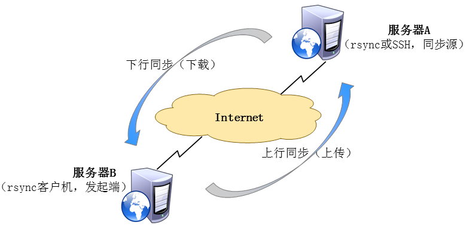

Rsync（remote synchronize）是一个远程数据同步工具，可通过LAN/WAN快速同步多台主机间文件，也中可以使用Rsync同步本地硬盘中的不同目录。
Rsync是用于取代rcp的一个工具，Rsync使用所谓的“Rsync算法”来使用本地和远程两个主机之间的文件达到同步，这个算法只传送两个文件的不同部分，而不是每次都整份传送，因此速度相当快。（可以参考How Rsync Works A Practical Overview进一步了解rsync的动作机制）。
Rsync支持大多数Unix系统，无论是linux、solaris还是BSD上都经过了良好的测试。此外，它在windows平台下也有相应的版本，比较知名的有cwRsync和Sync2NAS。
特点：
能更新整个目录和树和文件系统；
有选择性的保持符号链接、硬链接、文件属于、权限、设备以及时间等；
对于安装来说，无任何特殊权限要求；
对于多个文件来说，内部流水线减少文件等待的延时；
能用rsh、ssh或直接端口做为传输入端口；
支持匿名rsync同步文件，是理想的镜像工具。
rsync同步源：
指备份操作的远程服务器，也称为备份源
主要包括两种：rsync源、ssh源

rsync命令的用法：
基本格式：rsync [选项] 原始位置 目标位置
选项：
-a：归档模式，递归并保留对象属性，等同于-rlptgoD
-v：显示同步过程的详细（verbose）信息
-z：在传输文件时进行压缩（compress）
-H：保留硬链接文件
-A：保留ACL属性
--delete：删除目标位置有而原始位置没有的文件
-r：递归模式，包含目录及子目录中所有文件
-l：对于符号链接文件仍然复制为符号链接文件
-p：保留文件的权限标记
-t：保留文件的时间标记
-g：保留文件的属组标记（仅超级用户使用）
-o：保留文件的属主标记（仅超级用户使用）
-D：保留设备文件及其他特殊文件

调整inotify内核参数
max_queue_event：监控队列大小
max_user_instrances：最多监控实例数
max_user_watches：每个实例最多监控文件数
安装intotify-tools辅助工具
inotifywait：用于持续监控，实时输出结果
inotifywatch：用于短期监控，任务完成后再出结果
笔记部分
一、rsync远程同步服务器
服务器端：同步源
客户端：发起端
同步源的搭建方式：ssh或rsync
访问控制列表：
setfacl：设置特殊权限
-m 添加权限 setfacl -m u:manager:r-x hr
-x 删除一条特殊权限 setfacl -x u:manager hr
-b 删除所有特殊权限 setfacl -b hr
-R 递归
default 设置默认权限（对未来创建的文件也生效）
二、利用SSH搭建同步源
服务器端：创建同步目录：mkdir /var/ssh
创建测试用文件：touch /var/ssh/ssh.txt
设置权限： useradd a1 用来上传
useradd a2 用来下载
chown a1:a1 /var/ssh
客户端：创建同步目录： mkdir /ssh
同步服务器数据：rsync -avz a1@192.168.1.1:/var/ssh/* /ssh
三、利用RSYNC搭建同步源
服务器端：
创建同步目录：mkdir /var/rsync
创建测试用文件：touch /var/rsync/rsync.txt
创建主配置文件：vim /etc/rsyncd.conf
use chroot = yes
address = 服务器IP地址
port 873
log file = /var/log/rsyncd.log #rsyncd的日志文件
pid file = /var/run/rsyncd.pid #rsyncd进程ID保存文件
[share] #共享文件名
path = /var/rsync #共享的文件夹（绝对路径）
comment = this is rsync directory
read only = yes #为yes时只能下载文件，为no时可以下载和上传
dont compress = *.gz *.bz2 *.tar.gz *.rar *.zip
#不压缩此选项中扩展名文件
auth users = aa #账户
secrets file = /etc/rsyncd_users.db #密码保存文件
创建账户文件：vim /etc/rsyncd_users.db #该文件的权限必须为600
aa:123456
开启服务：rsync --daemon
关闭服务：kill $(cat /var/run/rsync.pid)
客户端：
创建同步目录：mkdir/rsync
同步服务器数据：rsync -avz aa@192.168.1.1::share /rsync
rsync -avz rsync://aa@192.168.1.1/share /rsync
注：--delete选项可以使客户端的同步目录的内容和服务器同步目录保持完全一致
四、同步脚本
基于SSH的远程同步服务器：
客户端：ssh-keygen -t rsa
ssh-copy-id a2@192.168.1.1
ssh gg@192.168.1.1
rsync -avz gg@192.168.1.1:/var/ssh/* /ssh
基于rsync的远程同步服务器：
客户端：export RSYNC_PASSWORD=123456
rsync -avz aa@192.168.1.1::share /rsync
五、自动备份
inotify两个组件：
inotifywait：持续监控，一有变动，立即输出结果
inotifywatch：收集文件系统变化情况，并在运行结束后输出汇总的变化情况
修改内核参数：
max_queued_evnents：监控队列
max_user_instances：最多监控实例数
max_user_watches：每个实例最多监控文件数
[root@localhost ~]# vi /etc/sysctl.conf
......省略......
fs.inotify.max_queued_events = 16384
fs.inotify.max_user_instances = 1024
fs.inotify.max_user_watches = 1048576
[root@localhost ~]# sysctl -p
inotifywait -mrq -e modify,create,move,delete /var/www/html
m 持续监控
r 所有子对象
q 简化输出
e 指定监控的事件类型
#！/bin/bash
INOTIFY_CMD="inotifywait -mrq -e modify,create,atrrib,move,delete /var/www/html/"
RSYNC_CMD="rsync -azH --delete /var/www/html/ rput@192.168.4.4:/var/www/html"
$INOTIFY_CMD | while read DIRECTORY EVENT FILE
do
if [ $(grep rsync | wc -l) -le 0 ]; then
#RSYNC_CMD
fi
done
双向同步
第一步，保证两台服务器之间可以通过ssh无密码访问，操作如下（这里以root用户为例）：
分别在server1和server2下，创建密钥
mkdir ~/.ssh
ssh-keygen -t rsa
ssh-copy-id 192.168.216.17
分别在两台机器上执行如下测试
ssh -p 22 192.168.216.17 date
ssh -p 22 192.168.216.16 date
至此用户授权完成
第二步，安装
安装unison
首先安装ocaml，版本至少为3.07或更高
下载地址：http://caml.inria.fr/pub/distrib/ocaml-3.01/
tar -zxf ocaml-3.10.2.tar.gz
cd ocaml-3.10.2
./configure
make world opt
make install
cd ..
安装unison
下载：http://www.seas.upenn.edu/~bcpierce/unison//download/releases/uniso-2.13.16/
tar -zxf unison-2.13.16.tar.gz
cd unison-2.13.16
make UISTYLE=text THREADS=true STATIC=true
cp unison /usr/local/bin
cd ..
安装inotify
下载地址：http://inotify-tools.sourceforge.net
tar -zxf inotify-tools-3.14.tar.gz
cd inotify-tools-3.14
./configure
make
make install
cd ..
至此所需的软件都已经安装完毕，可以在server1服务器上执行这个命令，来查看两台服务器之间是否可以同步文件，unison -batch /home/server1/ ssh://192.168.10.2//home/server2，如果这时候抱如下错误：
/usr/local/bin/inotifywait：error while loading shared libraries：libinotify
可以执行下这个命令：
ln -sv /usr/local/lib/libinotify* /usr/lib/
执行成功后，看目录下的文件是否同步
第三步，同步脚本
第三步，创建.sh脚本来执行同步
1）server1上创建脚本/root/inotify.sh(chmod a+x /root/inotify.sh):
#/bin/bash
ip2="192.168.216.17"
src2="/server1/"
dst2="/server2/"
/usr/local/bin/inotifywait -mrq -e create,delete,modify,move $src2 | while read line;
do
/usr/local/bin/unison -batch $src2 ssh://$ip2/$dst2
echo -n "$line" >> /var/log/inotify.log
echo $(date | cut -d " " -f1-4) >> /var/log/inotify.log
done
2）server2上创建脚本/root/inotify.sh(chmod a+x /root/inotify.sh)
#!/bin/bash
ip2="192.168.216.16"
src1="/server2/"
dst1="/server1/"
/usr/local/bin/inotifywait -mrq -e create,delete,modify,move $src1 | while read line;
do
/usr/local/bin/unison -batch $src2 ssh://$ip2/$dst2
echo -n "$line" >> /var/log/inotify.log
echo $(date | cut -d " " -f1-4) >> /var/log/inotify.log
done